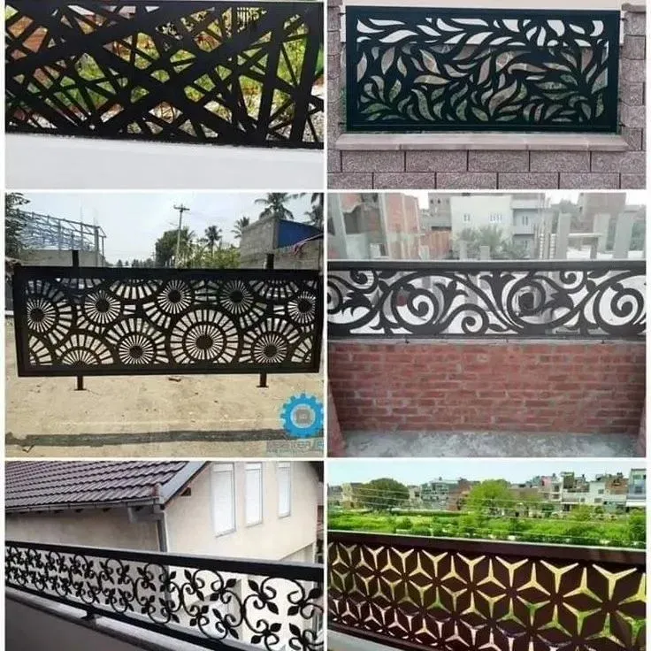
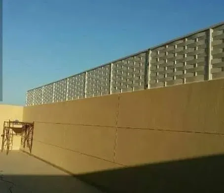
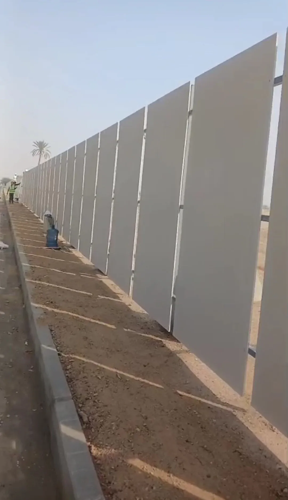
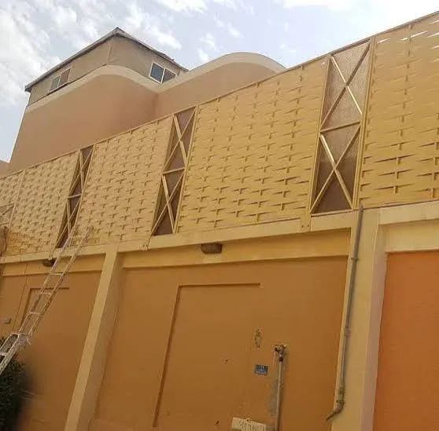
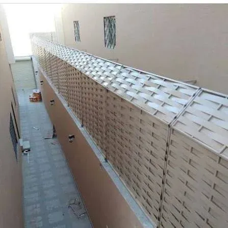
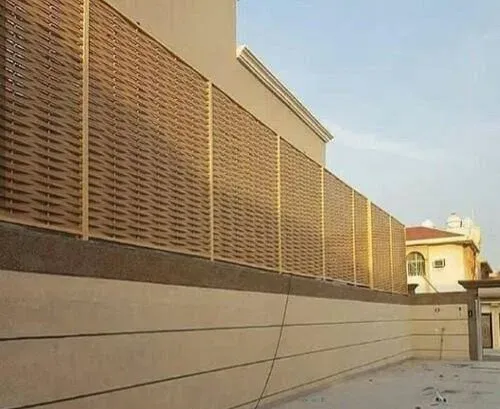

الساتر بين الخصوصية والتهوية: لماذا التصميم أهم من الخامة وحدها
كثير من العملاء يبدأون السؤال بـ"أي خامة أفضل؟"، لكن القرار الأول فعليًا هو: كم من الرؤية تريد حجبها، وكم من الهواء تريد إبقاءه يمر؟ ساتر مصمت بالكامل يمنح خصوصية تامة لكنه يحبس الهواء الساخن قرب الجدار، بينما ساتر مُخرّم بنسبة مدروسة يوازن بين الاثنين. نبدأ كل مشروع بهذا السؤال قبل الحديث عن الحديد أو الخشب.
أنواع السواتر التي ننفذها

سواتر قص ليزر (CNC)
زخارف هندسية أو إسلامية مقصوصة بدقة في الحديد أو الألمنيوم، تجمع بين الخصوصية الكاملة ومرور جزئي للضوء والهواء.

سواتر النسيج المعدني (الحصيرة)
شرائح معدنية متشابكة بنمط الحصير التقليدي، مظهر دافئ يناسب الفلل ذات الطابع التراثي أو شبه التراثي.
سواتر بديل الخشب
مظهر الخشب الطبيعي بمقاومة أعلى للرطوبة والحشرات، خيار متكرر حول المسابح والحدائق.
سواتر البولي كربونيت (لكسان)
حل شبه شفاف يحجب الرؤية المباشرة دون حجب الضوء بالكامل، الأنسب للبلكونات والشرفات الصغيرة.
سواتر الشرائح الأفقية المتحركة
شرائح قابلة للتدوير للتحكم بزاوية الرؤية والتهوية، مناسبة للواجهات التي تحتاج مرونة يومية.

سواتر الأسوار الخارجية للأحواش
ألواح ممتدة بارتفاعات أعلى لتحديد حدود الحوش وتأمينه، بتشطيب موحّد مع واجهة المبنى.
أين تُستخدم السواتر عادة
- واجهات الفلل والأحواش: لحجب الرؤية عن الشارع مع الحفاظ على مظهر الواجهة.
- حول المسابح: خصوصية للعائلة دون خلق جيب رطوبة مغلق حول الماء.
- البلكونات والشرفات: حلول أخف وزنًا كالبولي كربونيت لا تُحمّل الهيكل الإنشائي القائم.
- الفواصل الداخلية للحدائق: لتقسيم المساحة الخارجية دون بناء جدران دائمة.



عوامل تحديد السعر
| العامل | أثره على السعر |
|---|---|
| نوع الخامة (حديد، ألمنيوم، بولي كربونيت، بديل خشب) | الفرق الأكبر في التكلفة والعمر الافتراضي |
| درجة التخريم أو الزخرفة | القص بالليزر أعلى تكلفة من الشرائح المستقيمة البسيطة |
| ارتفاع وطول الساتر | يحدد كمية الخامة والدعامات الإنشائية المطلوبة |
| طريقة التثبيت (على سور قائم أو تأسيس جديد) | التأسيس الجديد يضيف تكلفة الحفر والقواعد |
صيانة السواتر
السواتر المعدنية تحتاج متابعة أبسط من المظلات لكنها ضرورية لإطالة عمرها في الجو الساحلي:
- فحص دوري لنقاط اللحام والتثبيت للتأكد من عدم وجود ارتخاء بفعل الرياح.
- إعادة الدهان الحراري الجزئي عند ظهور أول علامات التآكل قبل انتشارها.
- تنظيف الأتربة المتراكمة في الزخارف المقصوصة بالليزر لإطالة عمر الطلاء.
- شد أو استبدال الشرائح البلاستيكية أو الخشبية التي تتأثر بأشعة الشمس مع الوقت.
أسئلة يتكرر سؤالها
هل الساتر المعدني يصدأ في أجواء جدة الرطبة؟
ليس إذا خضع لمعالجة تجليف أو دهان حراري كامل قبل التركيب، وهو ما نلتزم به في كل ساتر معدني ننفذه.
ما الفرق بين الساتر والسور من الناحية العملية؟
السور غالبًا إنشاء إسمنتي دائم يحدد الملكية، بينما الساتر عنصر تكميلي يُضاف فوقه أو بمفرده لتوفير الخصوصية والتهوية معًا.
هل يمكن تركيب ساتر على سور قائم بدون تكسير؟
نعم في أغلب الحالات، عبر تثبيت قواعد تأسيس خفيفة أعلى السور القائم دون المساس بجسمه الإنشائي.
كم يستغرق تركيب ساتر لواجهة فيلا متوسطة؟
عادة بين يومين وأربعة أيام بعد اعتماد التصميم، حسب طول الواجهة ونوع الزخرفة.